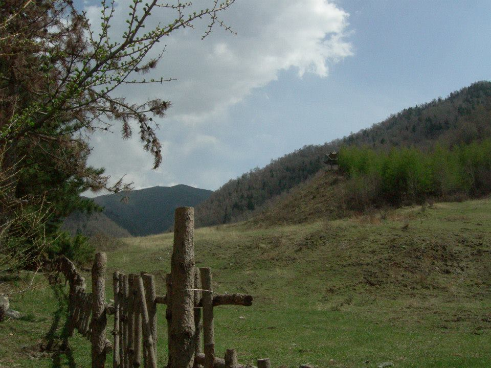

In Gansu province Angie pursued her tertiary education at Lanzhou University of Technology, in the provincial capital. There she completed her B. Eng. and her M.S. degrees. Fatefully, she would also meet missionaries there who would introduce her to the Christian faith. She would develop quite an affection for the natural beauty in Lanzhou, as evident from this picture.
